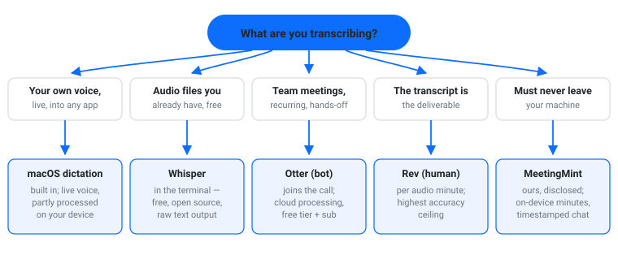
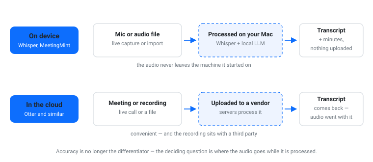
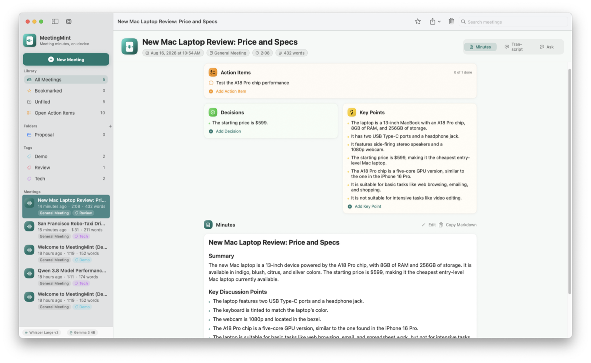

Most “best transcription software for Mac” lists are written by the companies selling the tools. Every pick links to a signup page, and the one question that should decide your choice — where does your audio go while it’s being transcribed? — never comes up. This comparison is organized around that question instead.
Full disclosure up front: I build one of the tools below. The rest of the list is held to the same standard I hold my own work to — no invented scores, no affiliate links, and every claim kept to what the vendor’s own materials say. If you’re hunting for transcription software for Mac in 2026, the honest answer is that the right pick depends on where your audio may live and who the transcript is for.

Three things separate real transcription tools from a demo video:

Before installing anything, know what your Mac already does. macOS dictation converts speech to text live, in any app with a text field — you talk, text appears, and per Apple’s guide, dictated text such as messages and notes is processed on your device rather than sent to Siri servers. It’s ideal for dictating email or notes, and it’s a real productivity tool, not a toy.
Apple Notes goes further for recordings: on supported Macs it can transcribe a voice memo after the fact, and you can search the text. Both are covered in my guide to transcribing interview recordings on a Mac, including where the built-ins stop.
Good: dictation of your own voice; quick memo transcription; a $0 budget.
Limits: dictation is live-only (it doesn’t transcribe files), and the built-ins don’t label speakers or export clean, timestamped transcripts.
Whisper is OpenAI’s open-source speech recognition model, and it’s the engine inside a surprising share of commercial transcription apps — including one further down this list. Run from the terminal, it transcribes audio files on your Mac, offline, in dozens of languages, at no cost beyond setup.
The trade is the interface: you’ll use the Terminal, pick a model size, and wait — larger models are more accurate and slower. For a researcher or journalist comfortable with a command line, it’s the best free option that exists. For everyone else, the apps below wrap the same capability in a window.
Good: files you already have; offline processing; zero cost; no upload.
Limits: command-line setup; no speaker labels out of the box; raw text output, not formatted minutes.
Otter joins Zoom, Meet, or Teams calls as a participant and produces a searchable, speaker-labeled transcript automatically. Setup is minutes, there’s a free tier, and the transcript lands in your inbox before the meeting ends. For open, non-sensitive meetings it’s the lowest-effort option in this list.
The cost is structural, not cosmetic: another participant is on the call, and the audio is processed in Otter’s cloud. I covered the built-in alternative in my Teams meeting transcription guide — the same cloud-vs-control trade applies there.
Good: recurring meetings, cross-platform, hands-off.
Limits: a bot in the participant list; cloud processing; subscription for real usage.
Rev is the human-in-the-loop option: upload a recording, and a professional transcriber returns a speaker-labeled, timestamped transcript (Rev also sells a cheaper AI tier). This is the route for legal, compliance, and published research — anywhere the wording itself matters and an AI draft isn’t defensible.
Good: evidentiary or contractual accuracy; poor audio; dense technical vocabulary.
Limits: priced per audio minute, turnaround measured in hours to days, and your recording sits with a third party. Overkill for meeting minutes.
“Interview transcription software” is its own buying decision — journalists, UX researchers, and academics search for it separately, and the checklist differs from meetings:
For that last point: MeetingMint (below) imports an interview recording and returns a transcript with timestamp-cited chat — ask it a question and it answers with the exact moment the answer was said. For the capture side, any recorder works; if the interview is happening on this Mac, AudioRecord captures mic and system audio, and my guide to recording audio on a Mac covers the built-in routes. (If your interview is a video file, I have a separate guide to extracting its audio track.)
The disclosure paragraph: I build MeetingMint. It’s on this list for one specific position — the interview-and-meetings slot where the audio must not leave your machine and you want decisions and action items, not just a transcript.
What it does, concretely: press record to capture your microphone, or drag in an audio file you already have — calls, lectures, interviews, a recording of any length. On-device Whisper transcribes it; a small language model running locally on your Mac turns the transcript into structured minutes — summary, decisions, action items — in 90+ languages. You can chat with the transcript, and answers cite the timestamps they came from. Nothing is uploaded; the models download once and after that everything runs on your machine.

Two honest limits. It captures the microphone or imports files — it does not capture system audio; pair it with AudioRecord when you need the other side of a call, and the file imports in. And it produces meeting-style notes, not formatted legal transcripts — when the wording itself is the deliverable, that’s still Rev territory. The free tier covers five meetings; Pro is a subscription or a one-time purchase.
| Tool | Runs | Speaker labels | Input | Audio leaves your Mac? | Price model |
|---|---|---|---|---|---|
| macOS dictation / Apple Notes | On device | No | Live voice | No | Free (built in) |
| Whisper (terminal) | On device | No (raw) | Files | No | Free, open source |
| Otter | Cloud | Yes | Live meetings | Yes (upload) | Free tier + subscription |
| Rev | Human/AI cloud | Yes | Files | Yes (upload) | Per audio minute |
| MeetingMint (ours) | On device | Via timestamped chat | Mic + file import | No | Free tier + one-time or subscription |
For transcribing audio files you already have: Whisper, run locally — free, offline, and accurate. For live dictation of your own voice: macOS dictation. Both are genuinely free; most “free” cloud tools gate minutes behind a trial.
As a first draft, yes — modern models handle clear audio well. But treat every AI transcript as a draft: spot-check names, numbers, and any quote you’ll publish. When the transcript is legal or contractual evidence, use a human service.
Use a tool that processes on-device: Whisper in the terminal, or MeetingMint for transcripts-plus-minutes. The recording never leaves your Mac — which matters for human-participant research, client calls, and anything under NDA.
MeetingMint turns any meeting or interview recording into structured AI minutes — summary, decisions, action items — with on-device processing and nothing uploaded. See how it works.
I’m Muhammad Karim — transportation researcher; I build privacy-first, local-first tools: MeetingMint, AudioRecord, Video Redactor, PrivateRedact, Self-Hosted RAG.